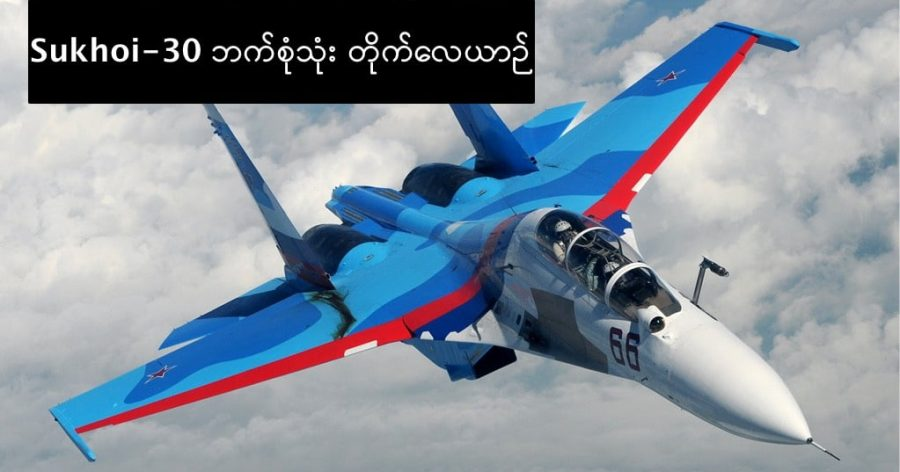

အခုမြန်မာ့တပ်မတော်က ဆူခွိုင်း Sukhoi Su-30 လေယာဉ် ၆ စင်းမှာကြားလိုက်တယ် ဆိုလို့ ဒီလေယာဉ် ကြောင်းကို လေ့လာမိပါတယ်။ Su-30 ကို ရုရှားနိုင်ငံ ဆူခွိုင်း ဒီဇိုင်းဌာနက ဒီဇိုင်းရေးဆွဲ ထုတ်လုပ်တာ ဖြစ်ပြီး ဘက်စုံသုံး တိုက်လေယာဉ် အမျိုးအစား ဖြစ်ပါတယ်။
နေတိုးနဲ့ အမေရိကန် အမည်ဝှက်ကတော့ ဖလန်ကာ(စီ) Flanker-C ဖြစ်ပါတယ်။ အင်ဂျင် နှစ်လုံးတပ် လူနှစ်ယောက်စီး လေယာဉ် ဖြစ်ပါတယ်။ ရာသီမရွေး အသုံးပြုနိုင်တဲ့ ဘက်စုံသုံး ဝေဟင်နဲ့ မြေပြင် တိုက်ခိုက်ရေး လေယာဉ် ဖြစ်ပြီး ရန်သူ့နယ်မြေ အတွင်း အဝေးထိုးဖောက် စစ်ဆင်ရေး များကိုလဲ ဆောင်ရွက်နိုင်ပါတယ်။
Su-30 ရဲ့ မူရင်းကတော့ နာမည်ကျော် Su-27 (MIG-27 မဟုတ်ပါဘူး) ဖြစ်ပါတယ်။ ၁၉၉၆ ခုနှစ်ကတဲက စတင်ပြီး ဒီဇိုင်းရေးဆွဲခဲ့တာ ဖြစ်ပြီး Su-27, Su-30, Su-33, Su-34 နဲ့ Su-35 ဆိုပြီး ထုတ်လုပ်ခဲ့ပါတယ်။ Su-30 မှာ ပုံစံမျိုးကွဲ နှစ်ခုရှိပြီး စက်ရုံ နှစ်ခုက ခွဲပြီး ထုတ်လုပ်ပါတယ်။ ဒီမျိုးကွဲ နှစ်ခုရဲ့ အဓိက ကွာခြားချက်က တပ်ဆင်တဲ့ အီလက်ထရောနစ် စနစ်တွေပဲ ဖြစ်ပြီး အခြားသိပ်ကွာခြားချက် မရှိလှပါဘူး။
Su-30 ရဲ့ အဓိက ထူးခြားချက်ကတော့ အလွန်အဆင့်မြင့်တဲ့ အေရိုဒိုင်းနမစ် ဒီဇိုင်းပဲ ဖြစ်ပါတယ်။ ဒီအဆင့်မြင့် ဒီဇိုင်းနဲ့ တွဲပြီး Thrust Vectoring အင်ဂျင်စနစ်ကို တပ်ဆင် လိုက်တဲ့အခါမှာတော့ အလွန် လေကြောင်း စစ်ကစားနိုင်စွမ်းအား မြင့်မားတဲ့ တိုက်လေယာဉ် ဖြစ်လာပါတော့တယ်။
လေယာဉ်မောင်းနှင်မှုကို ပျံသန်းရေး ကွန်ပြူတာ နဲ့ ထိန်းချုပ်ပြီး မောင်းနှင်တာ ဖြစ်ပါတယ်။ နာမည်ကျော် မွေဟောက် စစ်ကစား မှုကို အလွန် လှပသေသပ်စွာ ပြုလုပ်နိုင်တာကို အောက်က ဗီဒီယိုမှာ တွေ့မြင် နိုင်ပါတယ်။
ဒါ့အပြင် ကွင်းတို တက်ဆင်းနိုင်ပြီး ထိန်းသိမ်းပြုပြင် ဖို့လဲ အလွန်လွယ်ကူ ပါတယ်။ အလို အလျောက် ပျံသန်းတဲ့ အော်တိုပိုင်းလော့ စနစ်လဲ တပ်ဆင်ထားပြီး အနိမ့်ပျံသန်း မှုတွေမှာ ရေဒါနဲ့ ထိန်းချုပ်မောင်းနှင် နိုင်ပါတယ်။
လက်ရှိမှာ ရုရှား၊ အယ်လ်ဂျီးရီးယား၊ အင်ဂိုလာ၊ တရုတ်၊ ဘီလာရုစ်၊ အင်ဒီးယား၊ အင်ဒိုနီးရှား၊ ကာခစ်စတန်၊ မလေးရှား၊ ယူဂန်ဒါ၊ ဗင်နီဇွဲလား နဲ့ ဗီယက်နမ် လေတပ်တွေမှာ အသုံးပြုနေပြီး မြန်မာကလဲ ၆ စင်း မှာကြားထားပါတယ်။ အီရန် နဲ့ အာမေးနီးယား တို့ကလဲ ဝယ်ယူဖို့ စိတ်ဝင်စား နေတယ်လို့ သိရပါတယ်။
Sukhoi Su-30 ဘက်စုံသုံး တိုက်လေယာဉ်

February 2, 2018
Other Posts
- သင့်ကြောင်ဟာ ဘယ်သန်လား ညာသန်လား
- Antimatter (ဆန့်ကျင်ဒြပ်) ဆိုတာဘာလဲ
- စိန့်ဗယ်လင်တိုင်းရဲ့ မျက်နှာကို ပညာရှင်များက 3D ဖြင့်ပြန်ပုံဖေါ်
- အာကာသ လေပြင်းက ကြယ်သစ်မွေးဖွားမှုကို ရပ်တန့်စေနိုင်
- နေအဖွဲ့အစည်းအတွင်း သက်ရှိတွေ ရှိနေနိုင်တဲ့ လ ၆ စင်း
- Planet X တကယ်ရှိလား
- ဂြိုဟ်နှစ်စင်း တိုက်မိတဲ့ဖြစ်စဉ်
- မြန်မာပြည်က ဒီည မြင်ရမယ့် လကြတ်ခြင်း
- လကို လူလွှတ်မယ့် နာဆာရဲ့ ဒုံးပျံ
- ပိရမစ် တွေကို ဘယ်လို တည်ဆောက်ခဲ့သလဲ